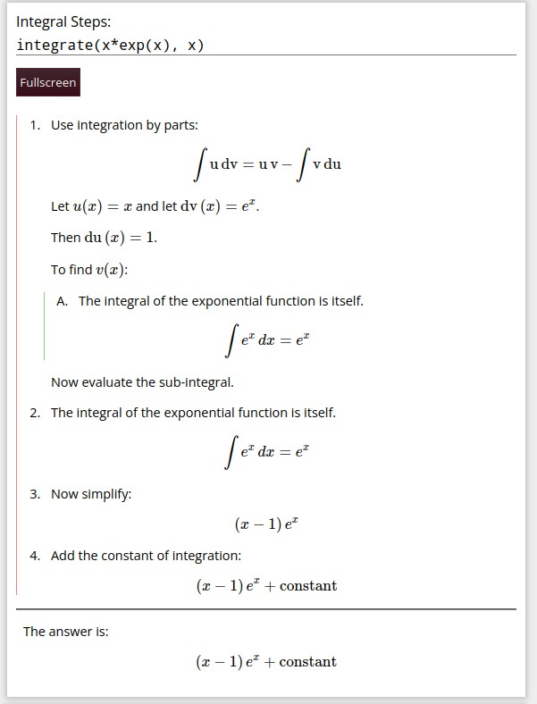
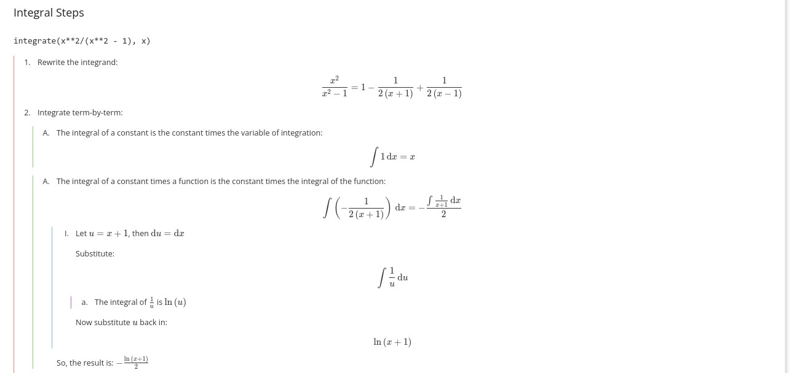
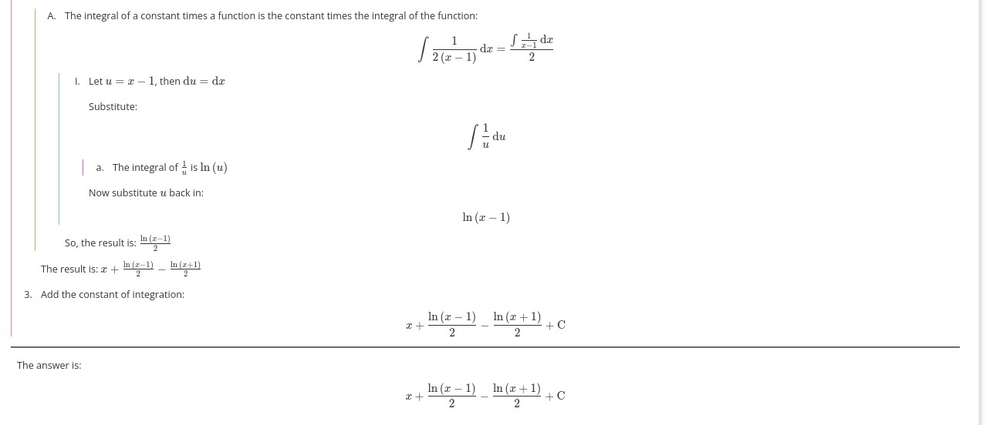
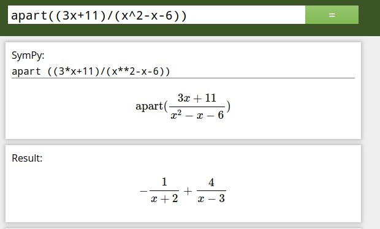
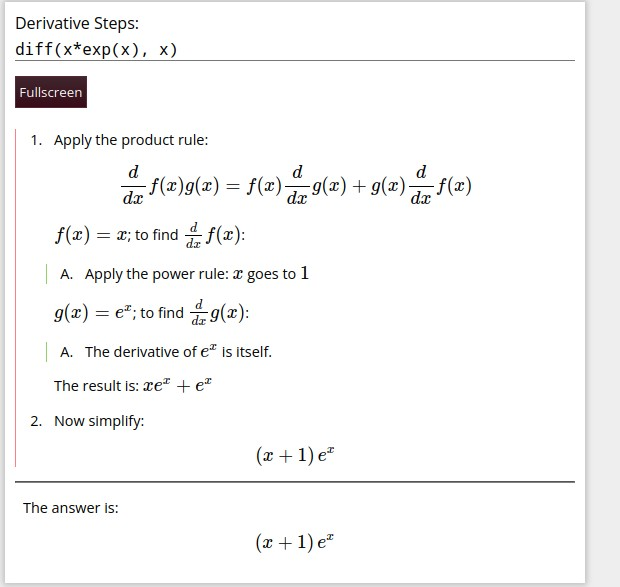
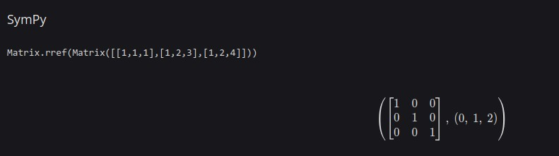

Sympy Gamma, my favorite WolframAlpha alternative
Intro
Many people know about Wolfram Alpha for it’s powerful ability to give step by step solutions to calculus problems… but only if you pay.
Because of this, I use a free (both as in beer, and as in freedom) alternative, called Sympy Gamma. The source code is on github.

It can also do partial fraction decomposition, trig subsitution, and more.
The step by step solutions, work by several special functions, that attempt to mimic how a student would solve a problem.
Location:
There are two urls:
As far as I can tell, these are two different instances of Sympy Gamma, with different rate limits.
Also, if you use the duckduckgo bang !sympy, then it inputs a function into sympygamma.com.
There is also Sympy Beta (Source code), which is a version of sympy ported to work entirely in the local browser, using Pyodide and webassembly. I’ve found that it manages to succeed where Sympy Gamma fails, and it also gets around rate limits since it works locally. In addition to that, Sympy Beta is a progressive web app, meaning it works offline after you open it in your browser once.
After some testing, I actually think I like Sympy Beta better, because of the reasons mentioned above, and some failures of Gamma mentioned below. In addition to that, I could not figure out how to self host Sympy Gamma, as the docker compose would not work. However, Sympy Beta seems to be a simpler, all in one NPM application.
Functions
Below are some of the functions I use commmonly, but really, you can use anything from python and the sympy library.
For most functions, the form is something like function(arguments) with the arguments in parenthesis. Some natural lanugage works in Sympy Beta, but it’s better to just use the python syntax.
Calculus
integrate() — also, if you use this function with sympy gamma, it will give you the step by step solution! Most of the time. It sometimes fails, either because sympy can’t figure it out or due to rate limits.
For example, the partial fractions decomposition step-by-step solutions don’t often show up on Sympy Gamma, and are somewhat obfuscated on Sympy Beta. Sympy Beta often offers multiple solutions as well, with some of them not being partial fraction decomposition. I think the Sympy manual integrate function doesn’t have an explicit rule to do partial fractions decomposition.
 
apart() — partial fraction decomposition!

diff(f(x)) — Take the derivative of a function — with steps!

limit(f(x), (x, limit)) — calculate the limit of a function
factor(polynomial) — factors a polynomia into irreducible terms.
plot(f(x)) — plots a function, and shows the graph.
summation(f(x), (x, bottom, top)) — do a sum. Have top be oo for an infinite sum. Also, on sympy gamma, appending .doit() to this function gives me more information with finite sums.
series(f(x), x, around, numofterms) — compute a Taylor Series, around “around”, with up to “numofterms” terms. It should be noted that after it computes “goto” terms, it will combine like enough terms, leaving you with less terms than you may have wanted.
help(function) — this function shows you the documentation of any function. This is a built in function into python.
There are many, many more functions, and they can be found on the sympy documentation.
Linear Algebra
Firstly, these matrix operations only seem to work on Sympy Beta.
Matrix([[0, 0, 0], [0, 0, 0]]) creates a matrix with 2 rows and 3 columns.
This can be used in other functions, like rref, to get the reduced row echelon form.
Matrix.rref(Matrix([[1, 1, 1], [1, 2, 3], [1, 2, 4]]))
You can even solve for abitrary constants using a, b, and c

Keywords and Variables
It’s not like a normal calculator. Sympy is a Python library, meaning everything is designed to be code first. Since it isn’t really good practice to put special symbols like “π” in code, there are alternative, purely text values that you can use to refer to the value of pi, infinity, or e.
oo = infinity. Yes, that is two o’s put togetheer.
E = e. It should be noted that lowercase e does not work.
pi = π. The classic pi, 3.1415…
Other resources for learning math independently:
For Calculus, I really like:
- Wikibooks — Calculus
- Paul’s Math Notes
- Openstax’s Calulcus Textbooks, Volume 1, Volume 2, and Volume 3. Also, Full book on libretexts
For Linear Algebra: